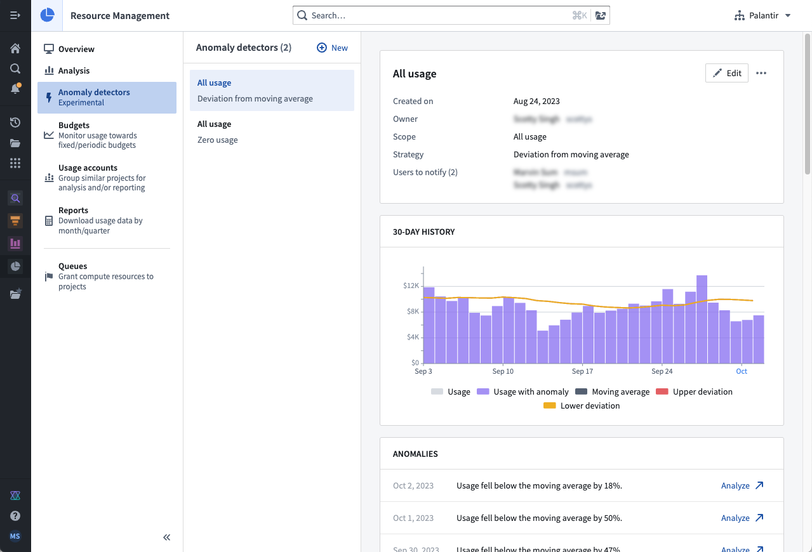
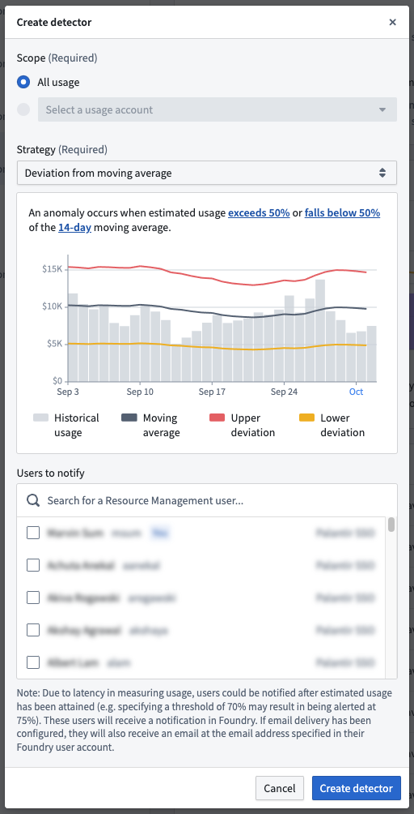

:::callout{theme="neutral"} The Resource Management anomaly detection functionality is only available for customers who have an active usage-based contract with Palantir. :::
Anomaly detection in Resource Management proactively notifies users of anomalous resource usage patterns. An anomaly detector consists of the following:
Users create anomaly detectors; each anomaly detector relies on a scope and strategy to detect anomalies and notify its subscribers.
:::callout{theme="warning"} Due to expected latency in measuring usage, an anomaly could be detected after it has occurred (for example, configuring a strategy that detects when usage exceeds 70% of the moving average may result in an anomaly detected at 75%). In some rare cases, this latency could take up to 26 hours. :::
Anomaly detectors are currently designed to monitor all usage for an enrollment. In the future, they will also be equipped to work with usage accounts.
Anomaly detectors currently support 2 different strategies:
To use anomaly detection, one or more of the following roles are required:
Enrollment administrator: View, create, edit, and delete anomaly detectors.Resource management administrator: View, create, edit, and delete anomaly detectors.Resource management viewer: View anomaly detectors.Roles are granted through the Enrollment permissions page in Control Panel.
In Resource Management, select Anomaly detectors in the left sidebar. This will display a list of all anomaly detectors available in your enrollment. Select a single anomaly detector to view its anomalies and details. Regular observation can be helpful to learn how often anomalies are detected and whether the detector provides useful signal.

To create an anomaly detector, select the New button while viewing all anomaly detectors. Select a scope, configure a strategy, and specify the subscribers. Then, select Create detector.

:::callout{theme="danger"} Deleting an anomaly detector also deletes its anomalies and unsubscribes all subscribers. This action cannot be undone. :::
While viewing a single anomaly detector, select the actions menu at the top right, and select Delete. When the warning dialog appears, select Delete detector.